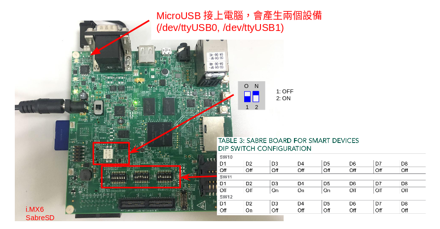

最近稍微有些時間可以玩玩手邊的 i.MX6 SabreSD SoloX 開發板，這是一套採用 i.MX6 Cortex-A9 搭配 Cortex-M4 的 HMP (Heterogeneous multi-processing) 架構的板子。
既然要玩玩看，那就從官方的 i.MX_Yocto_Project_User's_Guide.pdf 開始吧，我們使用 Freescale 社群所提供的開發環境來構件我們自己的 Yocto 系統。
注意到 Freescale 社群 的 Yocto 環境和 Yocto 官方的不太一樣，因此一開始最好還是照著 i.MX_Yocto_Project_User's_Guide.pdf 上的教學走。
電腦端的準備
推薦編譯用的環境為 Ubuntu 14.04 ，假設你的電腦剛好是 Ubuntu 14.04 則需要安裝以下東西:
(其他系統需要安裝軟體的資訊請參考: Yocto Project Reference Manual)
sudo apt-get install -y \ gawk wget git-core diffstat unzip \ texinfo gcc-multilib build-essential chrpath socat libsdl1.2-dev \ xterm sed cvs subversion coreutils texi2html \ docbook-utils python-pysqlite2 help2man make gcc g++ \ desktop-file-utils libgl1-mesa-dev libglu1-mesa-dev mercurial \ autoconf automake groff curl lzop asciidoc u-boot-tools
我自己編譯用的主機為 Gentoo Linux, 因此我另外做一個 docker image 來避免編譯出錯用，詳細資訊請參考 我用來編譯 Yocto 的 Docker 環境 一文。
安裝 repo
如果你系統上沒有編譯 Android 時需要用到的 repo 工具，那在開始一切之前我們需要安裝一下，下面命令將其放到 ~/bin/repo 去
mkdir ~/bin curl http://commondatastorage.googleapis.com/git-repo-downloads/repo > ~/bin/repo chmod a+x ~/bin/repo
接著在你的 ~/.bashrc 加上以下這一行，讓系統可以認到 ~/bin/repo
export PATH=~/bin:$PATH
設定 Yocto 環境
安裝好了 repo 後，接下來我們要來建立我們的開發用資料夾了，我們建立一個名為 fsl-release-bsp 的資料夾，並切進去
切進資料夾後，呼叫 repo 命令幫我們抓相關的 Yocto 程式碼下來
mkdir fsl-release-bsp && cd $_ repo init -u git://git.freescale.com/imx/fsl-arm-yocto-bsp.git -b imx-morty repo sync -j9
完成後，現在你的 fsl-release-bsp 是這樣的結構的，其中 sources 資料夾內就是一堆需要使用到的 Yocto Layers
. ├── fsl-setup-release.sh -> sources/meta-fsl-bsp-release/imx/tools/fsl-setup-release.sh ├── README -> sources/base/README ├── README-IMXBSP -> sources/meta-fsl-bsp-release/imx/README ├── setup-environment -> sources/base/setup-environment └── sources 1 directory, 4 files
現在，讓我們透過 fsl-setup-release.sh 這腳本建立我們實際上用來編譯用的資料夾吧 !
建立編譯環境
在建立編譯環境之前，我們有幾個基本的環境變數要設定:
DISTRO
DISTRO這個環境變數掌管了要編譯目標的類型，比如使用 X11 視窗、Wayland 視窗環境… 等，Freescale 共提供以下幾種:- fsl-imx-x11: X11 圖形環境
- fsl-imx-wayland: Wayland 圖形環境
- fsl-imx-xwayland: XWayland 圖形環境，注意到此時 X11 的程式無法支援 EGL
- fsl-imx-fb: 使用 Framebuffer 作為界面，大多用於純文字或是不支援 X11, Wayland 的狀況
MACHINE
MACHINE這個變數指定了要針對哪一種開發板進行編譯，比如這邊我使用的是 i.MX6 SabreSD SoloX ，因此我的MACHINE要選擇imx6sxsabresdEULA
EULA是告訴 Freescale 的編譯環境說你已經看過 NXP 的授權條款，如果你沒設定的話它就會要你看一長串的合約然後逼你輸入 yes
了解了以上幾個環境變數後，我們就可以透過 fsl-setup-release.sh 來建立我們的編譯環境，建立的方式是這樣的:
DISTRO=fsl-imx-x11 MACHINE=imx6sxsabresd EULA=1 source fsl-setup-release.sh -b <build dir>
因此假如我們要編譯的資料夾名為 build ，則使用以下命令建立資料夾並進入編譯環境
DISTRO=fsl-imx-x11 MACHINE=imx6sxsabresd EULA=1 source fsl-setup-release.sh -b build
一旦資料夾建立了以後，之後我們就可以使用以下命令直接切進編譯還進去
coldnew@gentoo ~/fsl-release-bsp $ source setup-environmet build
切進去後的資料夾結構其實都和 Yocto 是一樣的，這邊就不多加介紹。
選擇要編譯的 image
現在，我們的終端機已經在 build 資料夾並準備編譯我們的 image 了，NXP 的環境預設提供了這些 image 可以編譯:
core-image-minimal
Yocto 原生的 image, 提供最簡單的 busybox 環境讓你測試是否能夠開機正常
core-image-minimal.bb 可以在 poky 目錄找到。
core-image-base
終端機環境下的 image, 並提供硬體相關的支援。
core-image-base.bb 可以在 poky 目錄找到。
core-image-sato
一套採用 X11 視窗並透過 GTK 製作的行動環境，老實說很丑但是堪用。
core-image-sato.bb 可以在 poky 目錄找到。
fsl-image-machine-test
沒有圖形界面的終端環境下的 image
fsl-image-machine-test.bb 可以在 meta-freescale-distro 目錄找到。
fsl-image-validation-imx
具有圖形界面的 i.MX image，但是不會有任何 Qt5 的函式庫。
fsl-image-validation-imx.bb 可以在 meta-fsl-bsp-release 目錄找到。
fsl-image-qt5-validation-imx
具有圖形界面的 i.MX image，並包含 Qt5 的函式庫。注意到這個只支援具有
GPU的 i.MX SoC, 因此i.MX6UltraLite,i.MX6 UltraLiteLite,i.MX7 Dual相關的開發板都不能用呦~fsl-image-qt5-validation-imx.bb 可以在 meta-fsl-bsp-release 目錄找到。
上面就是大致上能用的 image 的介紹，不過一般我都是先用 core-image-minimal 確認可以開機後，再來進行修改。
讓我們開始編譯吧! 敲下以下命令後去休息一下等待編譯好吧~
coldnew@gentoo ~/fsl-release-bsp/build $ bitbake core-image-minimal
製作 SD 卡
編譯完成後，當前目錄會變成這樣的架構:
. <b>
├── bitbake.lock
├── cache <b>
├── conf <b>
├── sstate-cache <b>
└── tmp <b>
4 directories, 1 file
其中編譯完成的 image 在 tmp/deploy/images/imx6sxsabresd/ 資料夾下，我們可以看到有這些檔案
core-image-minimal-imx6sxsabresd-20180223010741.rootfs.ext4 README_-_DO_NOT_DELETE_FILES_IN_THIS_DIRECTORY.txt zImage--4.9.11-r0-imx6sx-sdb-emmc-20180222145816.dtb zImage-imx6sx-sdb.dtb core-image-minimal-imx6sxsabresd-20180223010741.rootfs.manifest u-boot.imx zImage--4.9.11-r0-imx6sx-sdb-lcdif1-20180222145816.dtb zImage-imx6sx-sdb-emmc.dtb core-image-minimal-imx6sxsabresd-20180223010741.rootfs.sdcard u-boot-imx6sxsabresd.imx zImage--4.9.11-r0-imx6sx-sdb-ldo-20180222145816.dtb zImage-imx6sx-sdb-lcdif1.dtb core-image-minimal-imx6sxsabresd-20180223010741.rootfs.tar.bz2 u-boot-imx6sxsabresd.imx-sd zImage--4.9.11-r0-imx6sx-sdb-m4-20180222145816.dtb zImage-imx6sx-sdb-ldo.dtb core-image-minimal-imx6sxsabresd.ext4 u-boot.imx-sd zImage--4.9.11-r0-imx6sx-sdb-mqs-20180222145816.dtb zImage-imx6sx-sdb-m4.dtb core-image-minimal-imx6sxsabresd.manifest u-boot-sd-2017.03-r0.imx zImage--4.9.11-r0-imx6sx-sdb-reva-20180222145816.dtb zImage-imx6sx-sdb-mqs.dtb core-image-minimal-imx6sxsabresd.sdcard zImage zImage--4.9.11-r0-imx6sx-sdb-reva-ldo-20180222145816.dtb zImage-imx6sx-sdb-reva.dtb core-image-minimal-imx6sxsabresd.tar.bz2 zImage--4.9.11-r0-imx6sxsabresd-20180222145816.bin zImage--4.9.11-r0-imx6sx-sdb-sai-20180222145816.dtb zImage-imx6sx-sdb-reva-ldo.dtb modules--4.9.11-r0-imx6sxsabresd-20180222145816.tgz zImage--4.9.11-r0-imx6sx-sdb-20180222145816.dtb zImage-imx6sxsabresd.bin zImage-imx6sx-sdb-sai.dtb modules-imx6sxsabresd.tgz zImage--4.9.11-r0-imx6sx-sdb-btwifi-20180222145816.dtb zImage-imx6sx-sdb-btwifi.dtb
要怎樣製作 SD 卡呢? i.MX 的環境很好心的幫我們做了 core-image-minimal-imx6sxsabresd.sdcard 這樣的檔案了，我們只要用 dd 將這個檔案抹到我們的 SD 卡就好囉 ~ (這邊假設 SD 卡是 /dev/sdd*)
sudo dd if=core-image-minimal-imx6sxsabresd.sdcard of=/dev/sdd bs=1M
等待完成後，我們就可以拿來測試開機囉~
測試開機
開機用 SD 卡製作好了一後，接下來讓我們來測試開機看看。

按照上面的方式插入 SD 卡，開機並在電腦端連上 /dev/ttyUSB0 (假設電腦端沒有別的 USB RS232 設備的話，接上這張開發板會多出 /dev/ttyUSB0 和 /dev/ttyUSB1 兩個設備)
我們就可以看到以下訊息，並成功登入系統 (預設帳號: root, 無密碼)
U-Boot 2017.03-nxp/imx_v2017.03_4.9.11_1.0.0_ga+ga2fea67 (Feb 22 2018 - 22:58:30 +0800) CPU: Freescale i.MX6SX rev1.2 996 MHz (running at 792 MHz) CPU: Extended Commercial temperature grade (-20C to 105C) at 30C Reset cause: POR Model: Freescale i.MX6 SoloX SDB RevB Board Board: MX6SX SABRE SDB DRAM: 1 GiB PMIC: PFUZE100! DEV_ID=0x11 REV_ID=0x21 MMC: FSL_SDHC: 0, FSL_SDHC: 1, FSL_SDHC: 2 *** Warning - bad CRC, using default environment Display: Hannstar-XGA (1024x768) Video: 1024x768x18 In: serial Out: serial Err: serial switch to partitions #0, OK mmc2 is current device # skip .... imx6sxsabresd login: root root root@imx6sxsabresd:~# uname -a uname -a Linux imx6sxsabresd 4.9.11-1.0.0+gc27010d #1 SMP PREEMPT Thu Feb 22 21:53:43 CST 2018 armv7l GNU/Linux